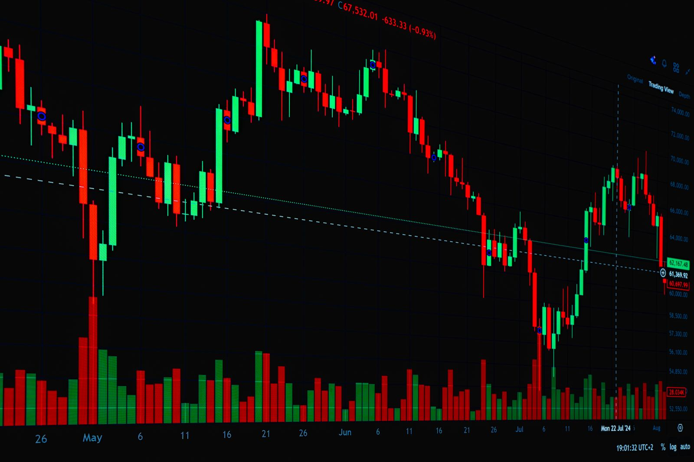

杠杆的本质：借钱买
杠杆就是借来的钱。你有 1 万元，加上借来的 9 万元，就能开一个 10 万元的头寸。 价格涨 10%，你赚 1 万 —— 相当于本金的 100%。价格跌 10%，你亏 1 万 —— 本金归零。
爆仓所需反向幅度 = 1 ÷ 杠杆倍数
10 倍 → 反向 10.0% 归零
20 倍 → 反向 5.0% 归零
50 倍 → 反向 2.0% 归零
100 倍 → 反向 1.0% 归零
而虚拟币日内波动 2%~5% 是常态。在高杠杆下，「正常波动」就足以造成永久性损失。
现货 Spot
1 倍杠杆。买多少币就是多少币，价格跌到零才会亏光，可以长期持有等待。
没有强平，但有永久亏损的可能
杠杆 / 合约
2~125 倍。放大盈亏，有强制平仓机制。方向判断正确与否决定一切。
有强平，可能在最优判断下仍被震出
期权 Options
非线性工具。亏损有上限（权利金），收益理论上无上限。代价是要付时间价值。
无强平，但会随时间流逝而贬值
永续合约 · 币圈最重要的发明之一
传统期货合约有到期日，到期必须交割，价格会自然向现货收敛。 永续合约（Perpetual Swap）取消了到期日 —— 好处是可以永久持有，坏处是失去了让价格收敛的机制。
解决办法就是资金费率（Funding Rate）：定期在多空双方之间互相支付一笔费用， 把合约价格拉回到现货价格附近。这是永续合约最核心的设计。

资金费率 · 让永续不飘走的锚
| 情形 | 资金费率 | 谁付给谁 | 含义 |
|---|---|---|---|
| 合约价 > 现货价 | 正值 | 多头 → 空头 | 做多过于拥挤，多头要付费给空头 |
| 合约价 = 现货价 | ≈ 0 | 无 | 多空平衡 |
| 合约价 < 现货价 | 负值 | 空头 → 多头 | 做空过于拥挤，空头要付费给多头 |
别小看这个数字。0.01% 每 8 小时，一天三次，一年就有 约 11%。 如果你用 10 倍杠杆持仓，资金费率是按名义仓位计算的 —— 也就是说， 一年光资金费就可能吃掉本金的 100% 以上，而这还跟价格涨跌完全无关。
在牛市中资金费率长期为正（多头付钱），持有多头仓位的人每天都在缓慢失血。极端行情下费率会飙升到 0.1%~0.3% 每 8 小时，此时即使价格不动，重仓多头也会在几天内被资金费耗干。
保证金模式 · 逐仓与全仓
风险隔离
为每个仓位单独划拨一笔保证金。最坏结果是这一笔保证金亏光，其他资金不受影响。
- 强平价可精确计算
- 适合高风险高杠杆的单笔投机
- 资金利用率低
共享保证金
账户内全部余额共同作为所有仓位的保证金。抗波动能力更强，但一旦爆仓，是整账户一起归零。
- 资金利用率高，强平概率较低
- 适合对冲组合与套利策略
- 风险不隔离，一处失守全线崩塌
| 关键指标 | 计算公式 | 说明 |
|---|---|---|
| 初始保证金 | 名义仓位 ÷ 杠杆倍数 | 开仓时需冻结的资金 |
| 维持保证金 | 名义仓位 × 维持保证金率 | 低于此水平即触发强平，通常 0.4%~1% |
| 保证金率 | (账户权益 − 维持保证金) ÷ 名义仓位 | 实时监控，趋近 0 时警告 |
| 未实现盈亏 | (当前价 − 开仓价) × 数量 × 方向 | 浮动盈亏，随价格实时变化 |
| 强平价 | 开仓价 × (1 − 1/杠杆 ± 维持保证金率) | 实际强平价会比理论值更近，因为还要扣除手续费 |
爆仓计算器 · 亲手感受杠杆的锋利
拖动滑块调整价格波动，切换杠杆倍数，实时观察保证金的变化与强平触发点。
杠杆与强平仿真 · BTC/USDT 永续
试几个组合：100 倍杠杆 + 价格跌 1%，看保证金直接归零。再试试 125 倍杠杆 —— 只需 0.8% 的反向波动，仓位就被清算。 而 BTC 在剧烈行情下单根 1 分钟 K 线波动 0.8% 完全正常。
强平引擎 · 毫秒级的清算机器
当账户保证金率低于维持保证金要求时，系统必须立刻处置这个仓位 —— 否则一旦价格跳空穿透，亏损会超过用户本金，形成「穿仓」，损失要由交易所或保险基金承担。
实时风险计算
风控系统对每个仓位连续计算保证金率。这在行情剧烈波动时可能每秒执行数十万次。
预警通知
保证金率接近阈值时，系统向用户推送追加保证金通知。但在极端行情下，从预警到强平可能只有几秒钟。
部分强平 / 减仓
部分交易所会先平掉一部分仓位来降低维持保证金要求，给用户留出缓冲。这是相对温和的处理方式。
全部强平
以市价单强制平掉整个仓位。在流动性不足时，这笔强制平单本身会推动价格进一步下跌，引发更多的强平 —— 这就是连环爆仓（Cascade）。
保险基金与 ADL
若强平后仍有亏损缺口（穿仓），由保险基金承担。基金耗尽时，触发自动减仓（ADL）—— 强制平掉对手方中盈利最多的仓位，用以填补缺口。
价格下跌 → 触发一批多头强平 → 强平单是市价卖单，进一步压低价格 → 触发更多多头强平。 这是一个自我强化的正反馈循环。历史上的极端行情（如 2021 年 5 月 19 日、2020 年 3 月 12 日）单日清算规模达数十亿美元，正是因为这种机制。
期权基础 · 买卖的是「权利」
期权的本质是一份权利合同：买方付一笔权利金，获得「在未来某个时间、以约定价格买入或卖出」的权利（而不是义务）。 卖方收取权利金，承担相应义务。
Call Option
买方有权在到期日以行权价买入标的资产。
标的涨到行权价以上才有利可图。最大亏损 = 付出的权利金，理论收益无限。
看涨时买入 Call
Put Option
买方有权在到期日以行权价卖出标的资产。
标的跌到行权价以下才有利可图。常用于对冲持仓下跌风险。
看跌或做保险时买入 Put
四种基础策略
| 策略 | 构成 | 最大盈利 | 最大亏损 | 适用判断 |
|---|---|---|---|---|
| 买入看涨 | Long Call | 无限 | 权利金 | 强烈看涨 |
| 买入看跌 | Long Put | 行权价 − 权利金 | 权利金 | 强烈看跌 / 对冲 |
| 卖出看涨 | Short Call | 权利金 | 理论无限 | 判断不涨 / 收租 |
| 卖出看跌 | Short Put | 权利金 | 行权价 − 权利金 | 判断不跌 / 低位接货 |
期权卖方的典型特征是「长期小赚，一次爆亏」。收取权利金时胜率往往很高，但遇到极端行情，一次亏损可能抹掉此前所有收益。 这在统计上被称为负偏态收益 —— 曲线左侧有一条极长的尾巴。
三个价值维度
内在价值
立即行权能获得的价值。
看涨：max(市价 − 行权价, 0)
时间价值
为「未来可能变得有利」支付的部分。剩余时间越长，时间价值越高。
期权总价
内在价值 + 时间价值
时间价值随到期临近而加速衰减（Theta）。
希腊字母 · 风险的分解
期权价格受多个因素影响。希腊字母把这些影响拆解开，量化成可以管理的风险敞口。
| 希腊字母 | 衡量什么 | 典型取值 | 实务含义 |
|---|---|---|---|
| Delta Δ | 标的价格变动 1 元，期权价格变动多少 | Call: 0~1 Put: −1~0 |
可理解为等效持仓量。Delta 0.6 的 Call 约等于持有 0.6 份标的 |
| Gamma Γ | Delta 随标的价格变化的速率 | 平价期权最高 | Gamma 高 = Delta 变化快 = 对冲难度大，临近到期时尤其剧烈 |
| Theta Θ | 每过一天，期权价格损失多少 | 买方为负 卖方为正 |
时间是买方的敌人。到期前最后几天衰减最快 |
| Vega ν | 隐含波动率变动 1%，期权价格变动多少 | 期限越长越高 | 波动率上升利好买方，下降利好卖方 |
| Rho ρ | 无风险利率变动对价格的影响 | 通常很小 | 短期期权中影响可忽略，长期期权需关注 |
把这五个字母想成体检报告：Delta 是方向、Gamma 是方向变化的加速度、Theta 是每天流出的租金、Vega 是对波动率的敏感度。 专业期权交易者管理的是这一组敞口，而不是单纯赌涨跌。
隐含波动率 · 市场在害怕什么
期权的定价模型需要一个「波动率」输入。但未来的波动率没人知道， 于是市场用当前期权价格反推出一个波动率 —— 这就是隐含波动率（IV）。它是市场对未来波动的预期。
| IV 水平 | 市场状态 | 期权价格 | 策略倾向 |
|---|---|---|---|
| 低（< 40%） | 平静、盘整 | 便宜 | 倾向于买入期权（成本低），做多波动率 |
| 中（40%~70%） | 正常 | 合理 | 依方向判断选择策略 |
| 高（> 70%） | 恐慌、剧烈波动 | 昂贵 | 倾向于卖出期权（收高额权利金），做空波动率 |
理论上，同一到期日的期权应有相同的 IV。但实际市场中，远离平值的行权价 IV 明显更高，形成一条上扬的「微笑」曲线。 原因很简单：市场愿意为极端行情（暴涨暴跌）支付额外溢价 —— 这就是人们买保险的心理。
风险清单 · 必须逐条核对
| 风险类型 | 具体表现 | 严重程度 |
|---|---|---|
| 强平风险 | 价格短时插针触及强平价，仓位被清算后价格又回到原方向 | 极高 |
| 资金费率侵蚀 | 长期持仓被费率持续扣费，即使价格不跌本金也在流失 | 高 |
| 流动性与滑点 | 强平时以市价执行，小币种可能以远差于预期的价格成交 | 高 |
| 平台风险 | 交易所挪用资产、跑路、被攻击、被监管冻结 | 极高 |
| ADL 自动减仓 | 即使盈利，也可能被系统强制平仓以填补穿仓缺口 | 中高 |
| 预言机 / 指数偏离 | 标记价格被操纵，导致异常的强平事件 | 中 |
| 智能合约漏洞 | 链上协议被攻击，资金被转移（DeFi 场景） | 高 |
| 监管与法律 | 政策变化导致交易受限、资产无法提取 | 高 |
杠杆与衍生品是专业工具，不是致富捷径。它们在设计上就是让多数参与者亏损的结构 —— 因为有手续费、资金费、价差这些持续的成本抽取。 在充分理解强平机制、成本结构和自己的风险承受能力之前，任何杠杆操作都应该被推迟。